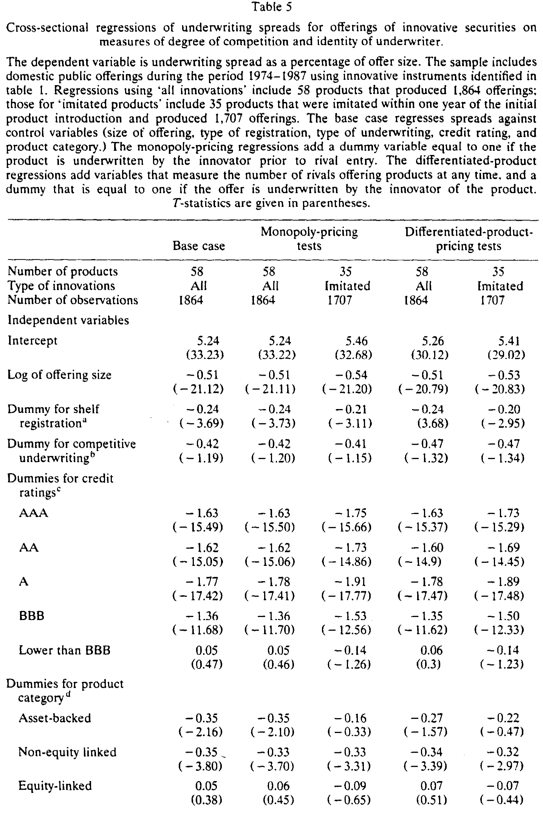
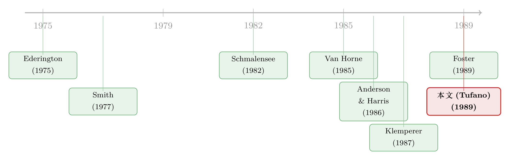

抄一个新产品几乎不要钱，为什么发明它的投行还是赢了？
本文读的是 Tufano (1989, Journal of Financial Economics)：用 1974–1986 年 58 项金融创新、1,944 笔公开发行的数据，作者发现发明新证券的投行既不能在「专利空窗期」收更高的价，长期还比模仿者收得更低——平均要少 18 到 26 个基点；可它们偏偏拿走了更大的市场份额。把价与量放在一起，唯一说得通的解释是：创新让投行变成了一家「成本更低的边际内厂商」。
1 一桩看上去不该发生的生意
先讲一个让人想不通的事实。
华尔街的投行要开发一个新的金融产品，前期投入大约在 5 万到 500 万美元之间：付给律师、会计、监管与税务顾问的咨询费，教育发行人、投资者和交易员的时间，给定价和交易系统写的程序，以及为做市而押上的资本和人手。除此之外，一家热衷创新的投行每年还要花约 100 万美元，养一个两到六人的产品开发小组。最后，操刀的银行家还把自己的职业声誉押了上去。
可问题在于——这笔投入几乎得不到任何法律保护。金融产品申请不了专利；美国证券交易委员会（SEC）的披露规则反而强制发明者公开产品的设计细节；竞争对手可以白白搭便车，蹭你教育监管者、发行人和投资者时砸下去的所有成本。于是银行自己也承认：模仿者开发一个仿制品，投入要比原创者少 50% 到 75%。
抄一个新产品几乎不花钱，而且立等可取。那么，一个再自然不过的问题是：如果发明新证券是一门理性的、追求利润最大化的生意，那这笔明摆着吃亏的「原创溢价」，到底靠什么赚回来？
这正是 Tufano 这篇 1989 年的论文要回答的。它的高明之处，不在于讲了一个多复杂的模型，而在于它把这个问题逼到了一个几乎无处可藏的会计恒等式面前。
2 把利润拆成三块：先动优势能藏在哪里？
任何一家厂商的利润，都可以写成「收入减成本」，也就是单位利润乘以数量。作者用的就是这个最朴素的分解：
这个恒等式之所以关键，是因为它把「先动优势」可能藏身的地方收窄到了三处，而且只有三处：发明者要补回投入，要么靠更高的价格 P，要么靠更低的成本 C，要么靠更大的数量 Q（前提是单位利润 P − C 为正）。
可惜，公开数据无法直接看到一家投行的成本 C，也看不到创新对它其他业务的溢出。于是作者做了一件很诚实的事：他只检验能被直接观测的两块——价格和数量——然后用排除法去逼近那块看不见的成本。 这也是全文的叙事主线：一路把「价格优势」这条最符合直觉的假说证伪，最后把读者逼到「成本」这个唯一的出口。
3 数据：58 个新产品，一万亿美元的四分之一
先把舞台搭起来。
作者要找的是「金融创新」，但「什么算创新」本身就容易掺入主观。他的办法是交叉三个独立来源：（1）用 ABI-Inform 和 Business Periodical Index 做文献检索；（2）访谈投资银行家；（3）调取两家追踪全部公开发行的数据商——Securities Data Corporation（SDC）和 IDD Information Services（IDDIS）——的数据。尤其是第三个来源，能避免样本偏向那些被媒体大肆报道、或事后被证明成功的明星产品。
最终入选 58 项创新，涵盖抵押贷款支持证券、资产支持证券、非权益挂钩债、权益挂钩债、优先股和普通股六大类，在 1974–1986 年间产生了 1,944 笔美国公开发行。这些工具一共募集了超过 2,780 亿美元，占同期全美公开发行总额的 11.6%。其中有意思的是它的「时间结构」：这 2,780 亿里，约三分之一（33.6%）是由最新产品（创新发生后的第一年）贡献的，而由问世五年及以上的工具贡献的只有 11.7%——创新的扩散，本身就是一股巨大的市场力量。
谁在玩这门游戏？几乎清一色是最大的那几家投行。六家投行包揽了 76.3% 的「开山之作」（某项创新的首笔发行）和 71.8% 的全部后续发行；可在更宽的市场上，这六家在 1984–1986 年只承销了全美 46% 的国内公开发行。换句话说，最大的银行在创新承销上的统治力，比它们在普通承销市场上还要强。 而且这门生意不小：58 个产品在 1976–1987 年间产生了 37.5 亿美元的承销收入，相当于同期 20 家最大投行承销总收入的 15.9%。
顺带提一个制度背景：1982 年 3 月起的 SEC Rule 415（「储架注册」，shelf registration）允许符合条件的公司预先登记、把发行的数量与定价决策推迟到真正发行时再定。这给发行人极大的灵活性。1983–1987 年间，62.5% 的创新发行用了储架注册。记住这一点，下面回归里它会是个重要的控制变量。
4 识别策略：先把「正常的利差」算干净
要检验发明者有没有定价优势，第一步不是去比价，而是先把那些「跟创新无关、却本来就会影响利差」的因素控制干净。否则你拿创新者的债和模仿者的股去比，比的可能只是产品类别的差异。
这里先定义清楚两个词。「价格」指的是承销利差（underwriting spread），即投资者付的发行价与发行人拿到的净额之差，表示为发行价的百分比——承销团每替发行人收上来 1 美元，自己留下多少。样本里 1,864 笔交易的平均利差是发行价的 1.4%，但抵押/资产支持证券更低、优先股和普通股更高。「数量」则用每笔发行在发行时点的市场价值度量，主承销商（book-runner）记全功——这是行业惯例，虽然粗糙，但主承拿到的曝光、报酬和信息优势都最多。
作者于是跑了一组横截面回归（如表 5），把承销利差对发行规模、注册方式、承销方式、信用评级和产品类别做回归。这一步的回归解释力惊人：R² 高达 0.7944，F 值 550。几个系数都符合既有文献：发行规模的对数系数是 −0.51（t = −21.12），发行越大利差越小；储架注册的虚拟变量系数 −0.24（t = −3.69），用储架的更便宜。产品类别的虚拟变量也都显著不同——普通股的利差最贵（系数 +2.96），非权益挂钩债更便宜（−0.35）。

Table 5
这里还冒出一个反常的细节：信用评级最高的证券，承销利差并不是最低的。最低的是 A 级（系数 −1.77），而非 AAA 级（−1.63）——评级与利差之间呈一条 U 形关系，而且在各种替代设定下都稳健。作者老老实实承认，这可能是评级虚拟变量和某些未观测的、影响搜寻成本或承销风险的因素相关，他没有强行解释。
这第一列回归本身不是重点，重点是：它成了后面所有比较的「基准尺」。把这些正常因素扣掉之后，剩下的，才是「是不是发明者」带来的那部分价差。
5 反转一：垄断空窗期，根本收不到溢价
接下来就是全文最关键的两步检验。
先看最符合直觉的那个假说——临时垄断定价。这是 Van Horne (1985) 的经典图景：一项创新的盈利能力会随时间衰减，因为利润会招来模仿者，促销者的利润随之侵蚀。逻辑很顺：如果监管延迟（regulatory lag，Anderson & Harris 1986 讨论过）、或逆向工程需要时间，发明者就能享受一段没有对手的空窗期，在这段时间里把价格抬高，把投入赚回来。
作者的做法是，在基准回归上加一个虚拟变量：如果某笔发行是在竞争对手进入之前、由发明者承销的，就取 1。如果垄断假说成立，这个系数应该显著为正。
结果呢？在全样本里，这个「垄断期」虚拟变量的系数是 −0.06，t 值只有 −0.66，统计上为零；而在那些一年内就被模仿的 35 个产品（1,707 笔发行）的子样本里，系数甚至是 −0.29（t = −2.36），显著为负。也就是说，在所谓的「垄断空窗期」，发明者不仅没有收更高的价，反而收得更低。
第一个直觉，就这样被数据干净地推翻了。
6 反转二：长期不但没溢价，还更便宜
也许垄断溢价收不到，但差异化的产品总能让人收点溢价？这是 Schmalensee (1982) 和 Klemperer (1987) 的思路：如果产品质量只能通过亲身体验来判断，或者顾客有转换成本被「锁定」，先动者就能比模仿者长期收更高的价。
作者于是换上差异化产品定价的设定：加入两个变量——市场上提供该产品的对手数量（number of rivals），以及一个「先动者虚拟变量」（pioneer dummy，如果这笔发行由该产品的发明者承销就取 1）。
两个结果都耐人寻味。对手数量的系数约等于 0（t 值在 −0.17 到 0.40 之间），完全不显著——多一个对手进场，价格几乎不动。而先动者虚拟变量的系数是 −0.18（t = −3.53，全样本）和 −0.26（t = −4.59，被模仿产品子样本），显著为负。翻译过来：把所有别的因素都控制住之后，发明者承销同一类产品，比模仿者还要便宜 18 到 26 个基点。
到这里，价格这条线被彻底堵死了。发明者既没有临时的垄断溢价，也没有长期的差异化溢价；恰恰相反，它们是市场上价格最低的那一拨。可与此同时——这是论文摘要里点明、也是它后半部分（数量分析）反复确认的——发明者承销自己创新产品的数量，显著高于承销模仿产品的银行。 低价，却高量。
7 唯一的出口：发明者成了「成本更低」的边际内厂商
现在回到那个三选一的恒等式。价格 P 这条路被堵死了（甚至是负的），数量 Q 却明显更大。如果单位利润 P − C 还能为正、能补回那笔投入，那唯一可能的，就是发明者的成本 C 更低。
这是一个漂亮的排除法收尾：作者从头到尾没有直接观测到任何一家投行的成本，却用价与量的组合，把读者逼到了「成本优势」这个唯一的出口。 用产业组织的语言说，创新让发明者变成了一家「边际内厂商」（inframarginal firm）——它能压低价格、抢占份额，同时仍赚到正利润，去抵消当初的研发投入。
那成本优势从哪来？作者给了几条可信的猜测，但都坦承数据无法直接检验：
- 规模与范围经济：发明者往往同时做承销和做市，联合生产能摊薄成本；它在该产品上的交易量大，定价、对冲、库存管理的边际成本更低。
- 更低的营销成本：一个有「发明者」名号的银行，等于向市场免费发出了一个关于自身技能与创造力的可信信号，不必再花大力气去推销。
换句话说，发明新证券真正买到的，不是一段可以宰客的垄断期，而是一种让自己在这条产品线上始终比别人成本更低的能力。这也解释了那个一开始让人想不通的悖论：抄袭虽然便宜，但抄袭者永远是那个边际厂商，而发明者已经把自己挪到了成本曲线更靠里的位置。
这恰好是后来文献的起点。关于「既然能被免费模仿、发明证券的投行凭什么还赢」，一个更直接的后续回答可参见《抄你，免费、且立等可取——可发明证券的投行，凭什么还是赢？》；而创新如何反过来改变信息环境，可参见《同一张期权，有人因它更勤于打探，有人因它更愿意躺平》。
8 文献脉络
把这篇论文放回它的坐标系，会看得更清楚。它其实是两条河流的交汇处。
一条河来自承销利差的实证传统。Ederington (1975) 最早系统研究公司债承销中的不确定性、竞争与成本；Smith (1977) 比较配股与承销发行的成本；到 1980 年代，Rogowski & Sorenson (1985)、Kidwell, Marr & Thompson (1984)、Foster (1989) 一系列论文确立了「发行越大、信用越好、用储架注册，利差越低」这些经验规律。Tufano 这篇的第一列回归，本质上就是在复制并站稳这条文献，好把它当作干净的基准尺。
另一条河则来自营销与产业组织里的「先动优势」研究。Schmalensee (1982) 用体验品和质量信号论证先动品牌能收溢价；Klemperer (1987) 用转换成本给出另一条机制；Robinson & Fornell (1985)、Urban et al. (1986) 等用消费品和工业品数据做了大量实证。与此并行的，是金融领域对创新的零星思考：Van Horne (1985) 提出创新利润会随模仿而侵蚀，Anderson & Harris (1986) 讨论监管延迟可能给发明者一段空窗期。

Tufano 的贡献，是第一次把第二条河的「先动优势」问题，搬到第一条河的「承销利差」数据上做严格检验——并且得出了一个与营销文献主流（先动者收溢价）相反的结论：在投资银行业，先动优势不走价格，而走成本与数量。它既是承销实证的延伸，也是金融创新经济学的一块奠基石。
9 评论与延伸（Q&A + 研究方向）
(a) 几个可能的疑问
Q：承销利差真的能代表「价格」吗？发行人拿到的总成本可能不止这一块。
这是最该担心的测量问题。利差确实只是承销成本的一部分，不含发行人在定价、折价（underpricing）上的隐性损失。作者用了若干替代设定（如把因变量换成美元利差、把规模换成规模本身而非其对数），结论稳健；但「价格」的完整口径里，IPO/SEO 折价那一块没被纳入，这是它无法触及的盲区。
Q：发现「先动者更便宜」，会不会只是因为发明者本来就是六大行，而大行什么都便宜？
部分担忧被控制变量吸收了：回归里已经控制了发行规模、信用评级、产品类别、注册与承销方式。但「是不是顶级投行」这个身份本身并没有单独的固定效应，而发明者与顶级投行高度重合（六家占 76.3% 的开山之作）。所以更准确的说法是：先动者虚拟变量可能同时捕捉了「发明者身份」和「顶级投行身份」，两者在这份数据里很难彻底分开。
Q：「成本更低」这个结论，是直接证出来的吗？
不是，是排除法推出来的。作者明确说数据不允许直接检验成本优势或溢出效应。所以「inframarginal firm」是对「低价 + 高量 + 正利润」这组事实的最佳解释，而非被直接测量的对象。它是一个有说服力的推断，但严格说仍是一个未被独立验证的机制。
Q：垄断期虚拟变量为负，难道发明者在空窗期反而「赔本赚吆喝」？
一个合理的解读是：发明者在产品早期主动定低价，是为了教育市场、把蛋糕做大、并锁定自己作为该产品「自然承销商」的地位——这本身就是在投资未来的数量和成本优势，而非追求当期的垄断租。这与「低价高量」的整体图景是自洽的。
Q：「对手数量」系数为零，是不是说明竞争根本不影响价格？
更可能是这门生意的竞争维度不在「价格」上。发明者和模仿者卖的不是完全同质的服务——发明者有信息、做市和声誉优势。对手多了，价格不动，但份额会被重新切分。竞争体现在数量上，而不是利差上。
Q：这套结论能推广到今天的金融创新（比如结构化产品、加密资产）吗？
机制（规模范围经济、声誉信号、不可专利）大体仍成立，但环境变了：今天的产品复杂度更高、监管更细、做市更依赖技术资本。低价抢量、靠成本优势回本的逻辑可能更强，但「教育市场」的成本结构和「免费模仿」的速度都和 1980 年代不同，需要重新测量。
(b) 几个可能的研究问题与提案
1. 把「折价」纳入价格口径，重做先动优势检验。 【经济故事】Tufano 只看了承销利差，没看 IPO/SEO 折价。如果发明者在利差上让利、却在折价上找补（或反之），整张「价格」图景会变。先动优势到底是「真便宜」还是「明处便宜暗处贵」？【可行性】中。需要把创新产品的首发与后续发行的折价数据接上（SDC + CRSP/TRACE），识别上可沿用本文的 pioneer dummy 框架，难点在于不同产品类别折价的可比性。
2. 用公司债二级市场流动性，直接检验「成本优势」机制。 【经济故事】本文的核心推断——发明者是低成本的边际内厂商——从未被直接验证。如果成本优势真来自做市规模经济，那么发明者做市的那些创新债券，二级市场买卖价差应当更窄、深度更大。【可行性】高。TRACE 提供公司债逐笔成交，可把每只创新债券的主做市商身份与「是否发明者承销」对接，比较流动性指标。这能把一个 1989 年只能靠排除法的推断，变成可直接测量的实证。（这条思路与《掀开交易商的「桌布」：一场被监管钦定的公司债透明度实验》的数据基础相通。）
3. 外资发行人/外资承销商的「创新先动优势」是否不同？ 【经济故事】当发明者与发行人来自不同司法辖区，监管延迟、信息教育成本和声誉信号的可信度都会改变。外资身份会放大还是削弱先动者的成本优势？【可行性】中。需要国际发行数据（Dealogic/SDC Global），识别上可用「产品在某国首发」定义本地 pioneer，难点是控制跨国制度差异。
4. 监管延迟的外生变动，作为先动优势的自然实验。 【经济故事】本文把「垄断空窗期」当成内生的产品特征。但 SEC 审批速度、产品登记要求的变化，会外生地拉长或缩短空窗期。如果某项规则改革突然延长了模仿者进入的时滞，先动者的定价/份额会怎样反应？【可行性】中。需要识别一次清晰的监管时点变化（如某类产品登记规则收紧），用 DiD 比较受影响与未受影响的产品。难点在于找到足够干净、且样本量够大的政策冲击。
5. 创新的「时间结构」与发明者份额的衰减曲线。 【经济故事】本文提到募资额的三分之一来自创新首年、只有 11.7% 来自五年以上的老产品。那么发明者的市场份额，沿着产品生命周期是如何衰减的？衰减速度和产品的可模仿性、复杂度有什么关系？【可行性】高。本文的数据结构（58 产品 × 逐年发行）就支持构造每个产品的「发明者份额—产品年龄」面板，做生存分析式的刻画。
我的判断
这篇论文的分量，不在技术，而在问题的提法和排除法的干净。它把一个看似无解的悖论（不可专利的创新为何仍有人做）压缩成一个三选一的会计恒等式，然后用价与量两条可观测的证据，把读者一步步逼到「成本优势」这个唯一出口。这种「用能看见的，去推断看不见的」的论证美学，比任何花哨的模型都更经得起时间。它也给出了一个反直觉、却影响深远的结论：在投行业，先动优势走的是成本和数量，而非价格——这与营销文献里「先动者收溢价」的主流恰好相反。
对识别，我最大的保留有两处。其一，「发明者」与「六大行」高度共线，先动者虚拟变量到底捕捉的是创新能力还是单纯的规模/声誉，这份数据难以彻底拆开；其二，核心机制（低成本）始终是推断而非测量，规模范围经济、声誉信号这几条都没被独立验证，留下了被替代解释侵蚀的空间。
后续我最想看到的，是有人用今天的逐笔交易数据（TRACE 之于公司债），把这个 1989 年只能靠排除法的「成本优势」推断，变成一个能直接称重的实证对象——看看发明者做市的那些创新债券，是不是真的买卖价差更窄、流动性更好。如果是，Tufano 的排除法就被补上了最后一块拼图；如果不是，那「发明者凭什么赢」这个问题，就还得重新讲一遍。
参考文献
Anderson, Ronald and Christopher Harris (1986). A model of innovation with applications to new financial products. Oxford Economic Papers 38, 203–218.
Ederington, Louis (1975). Uncertainty, competition, and costs in corporate bond underwriting. Journal of Financial Economics 2, 71–94.
Foster, F. Douglas (1989). Syndicate size, spreads and market power during the introduction of shelf registration. Journal of Finance 44, 195–204.
Kidwell, David, M. Wayne Marr, and G. Rodney Thompson (1984). SEC Rule 415: The ultimate competitive bid. Journal of Financial and Quantitative Analysis 19, 183–195.
Klemperer, Paul (1987). The competitiveness of markets with switching costs. Rand Journal of Economics 18, 138–150.
Rogowski, Robert J. and Eric H. Sorenson (1985). Deregulation in investment banking: Shelf registrations, structure and performance. Financial Management 14, 5–15.
Schmalensee, Richard (1982). Product differentiation advantages of pioneering brands. American Economic Review 72, 349–365.
Smith, Clifford W. Jr. (1977). Alternative methods for raising capital: Rights versus underwritten offerings. Journal of Financial Economics 5, 273–307.
Tufano, Peter (1989). Financial innovation and first-mover advantages. Journal of Financial Economics 25, 213–240.
Van Horne, James (1985). Of financial innovations and excesses. Journal of Finance 40, 621–631.